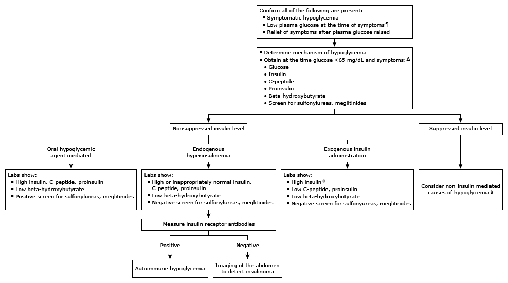

* The lower limit of the normal fasting plasma glucose value is approximately 70 mg/dL (3.9 mmol/L), but it can vary depending on the patient population and clinical laboratory. Interpretation of a specific abnormal test result should be based upon the reference range reported with that result.
¶ The probability of a hypoglycemic disorder is low in patients with sympathoadrenal symptoms but normal concurrent glucose.
Δ If the venipuncture glucose is <65 mg/dL (3.6 mmol/L) at the time of symptoms, an underlying hypoglycemic disorder is possible. If the patient is not symptomatic when seen, the diagnostic strategy is to replicate conditions in which hypoglycemia would be expected. If symptoms occur primarily in the fasting state, testing should be performed during a supervised fast. If the patient has a history of exclusively postprandial symptoms, a mixed meal test should be performed.
◊ In hypoglycemia caused by synthetic insulin analogs, insulin concentrations may be low, depending upon the insulin assay used. Clinical suspicion should guide subsequent testing of the sample obtained at the time of hypoglycemia against a panel of antibodies to insulin capable of detecting various analogs.
§ Alcohol, drugs (other than antihyperglycemic agents), malnourishment, cortisol deficiency, nonislet cell tumors.